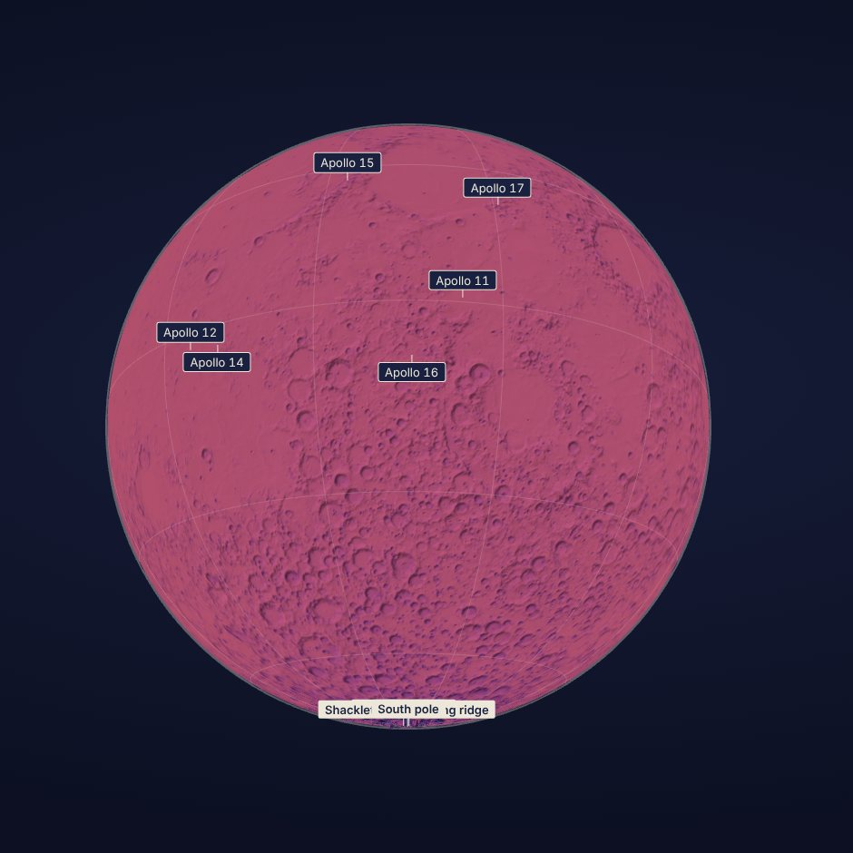

Why the south pole is different
On most of the Moon, day lasts two weeks and so does night. Anything that lands there has to get through about fifteen days of darkness and deep cold on stored power.
At the poles the Sun never sets in the usual way. It circles the sky within a couple of degrees of the horizon all year. That makes low hills decisive: a ridge top can stay lit for most of the year, while the crater floor beside it never sees the Sun at all. Those permanently dark floors are also where water ice is thought to collect.
So the best landing sites are small, specific places, and finding them means knowing the skyline at every one.
What the map found
Three candidate sites near the pole, next to the first place people landed.
| Place | Time in sunlight | Longest night | Time with Earth in view |
|---|---|---|---|
| Shackleton connecting ridge | 88.5% | 7.3 days | 51.1% |
| Malapert massif | 56.8% | 17.2 days | 100% |
| The south pole itself | 25.3% | 27.1 days | 20.5% |
| Apollo 11 landing site, near the equator | 48.3% | 14.8 days | 100% |
The other five Apollo sites are much the same: 46 to 49% sunlight and nights of about fifteen days. The ridge near Shackleton crater gets nearly twice the sunlight with half the night, and Malapert never loses sight of Earth.
How it works
-
Measure the skyline
From the elevation maps made by NASA's LOLA laser altimeter, work out how high the surrounding ground rises in every direction, as seen from a mast two metres tall.
-
Track the Sun and Earth
NASA JPL's Horizons system gives where each one sits in the sky, for every hour of 2027.
-
Count the hours
A spot is in sunlight when the Sun is above its skyline, and in radio contact when the Earth is. Repeat for 17,665 points around the pole and 259,200 across the whole Moon.
What you can do in the map
- Drag, zoom and tilt anywhere on the Moon, from the whole globe down to a single crater.
- Colour the surface by sunlight, by time with Earth in view, or by the longest night.
- Click any spot to see its skyline, a year-long timeline and its solar power.
- Compare the candidate sites with the six Apollo landing sites.

How far to trust it
Around the south pole the map uses terrain measured every 120 metres, with points two kilometres apart, so a narrow crest can fall between points. The site dashboard uses finer terrain and is the detailed answer for a single site.
Across the rest of the Moon the terrain data is far coarser, one height every 1.9 kilometres. Treat those values as a survey of the neighbourhood, not of the exact spot.
The site scores in the map use starting weights we chose, not a NASA standard.